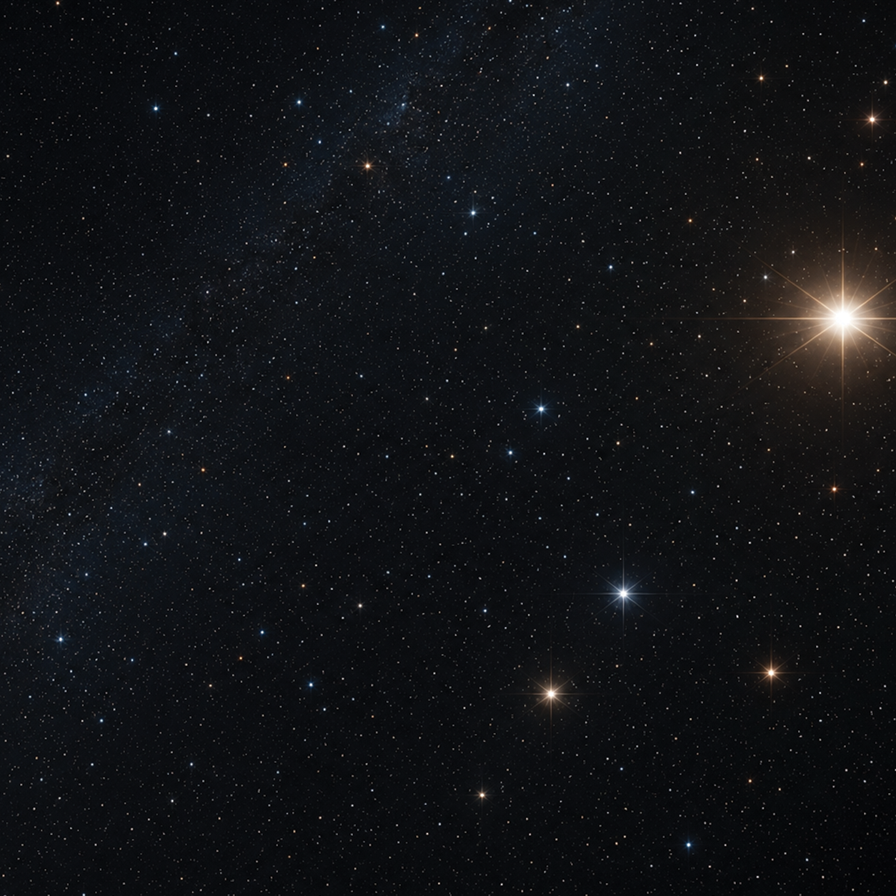

+12
At the scale of nearby stars, what was once mostly uncertain in 1977 has become a precisely mapped and continuously updated system. Instead of only relying on visible-light observations, modern astronomy now uses large-scale surveys and space telescopes to measure stellar positions, movements, and distances with extreme accuracy. Entire catalogs of stars have been built with precise motion tracking, revealing how nearby systems shift over time rather than remaining fixed points in the sky. Compared to 1977, when the structure of our local stellar neighbourhood was still relatively approximate, we now understand nearby stars as part of a dynamic, data-rich map of the galaxy that is constantly refined through ongoing observation and computation.